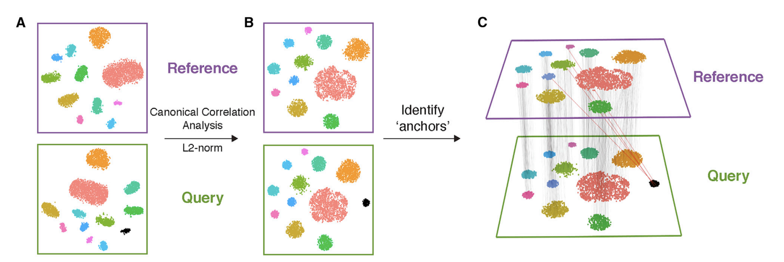
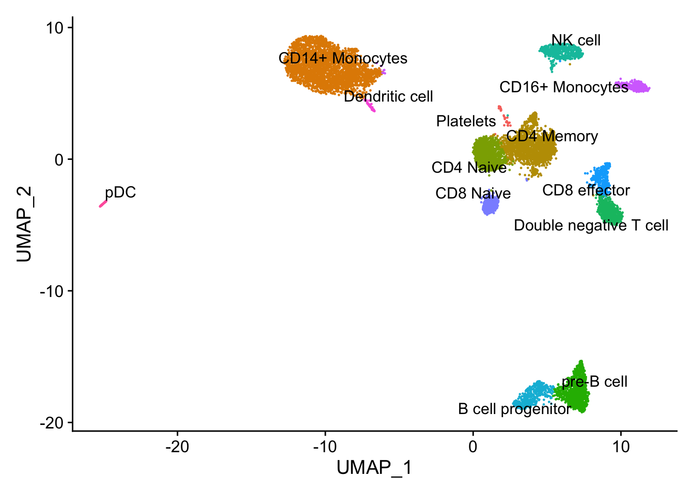
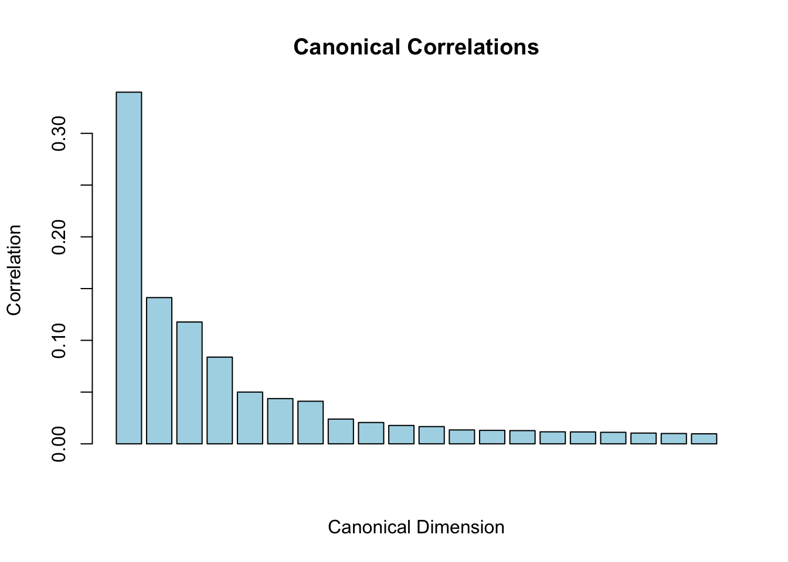
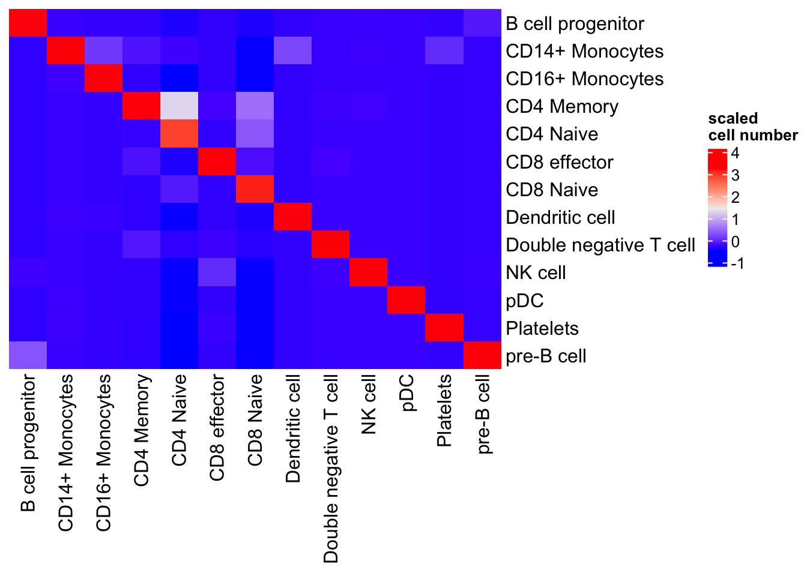
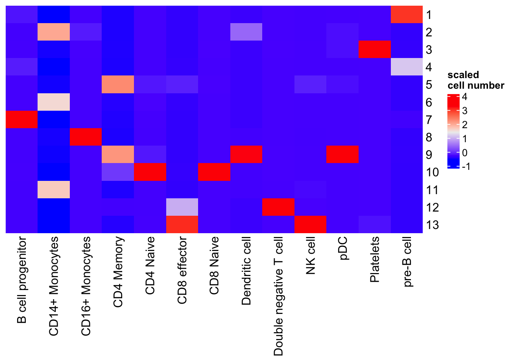
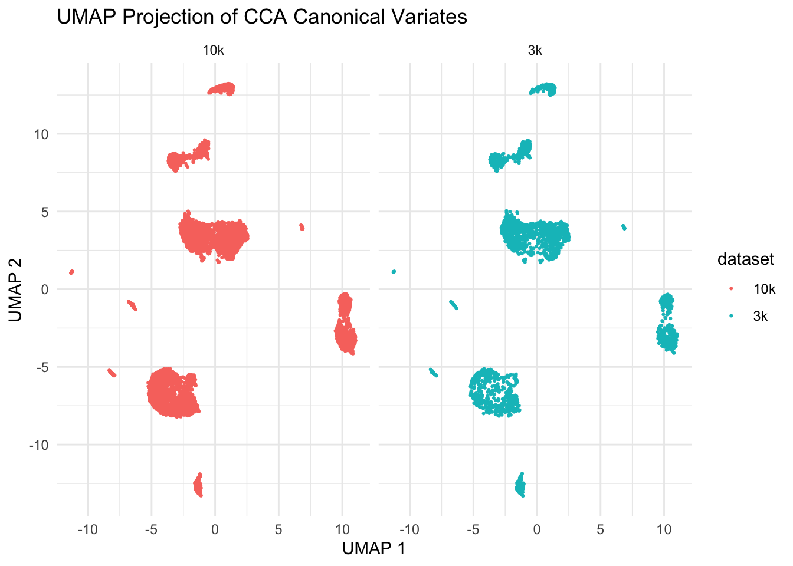
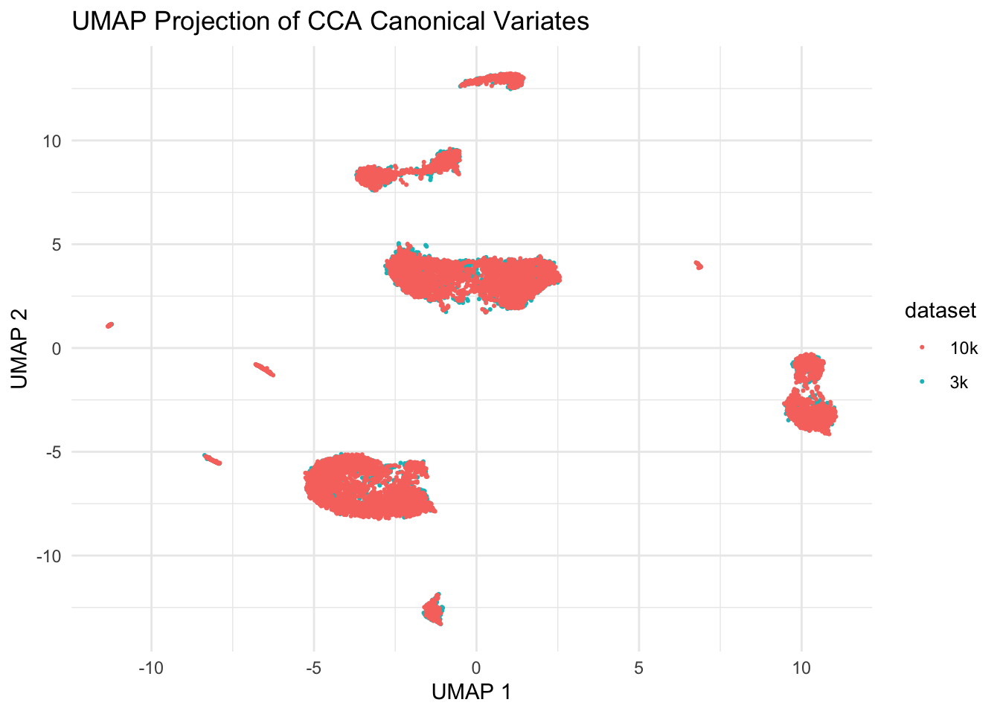
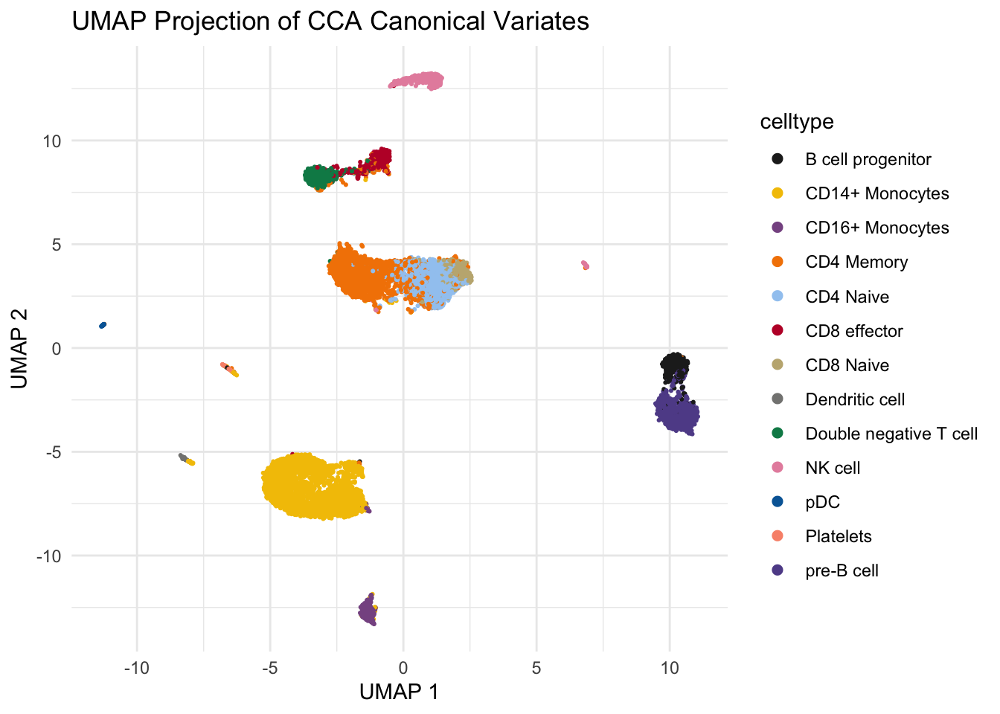
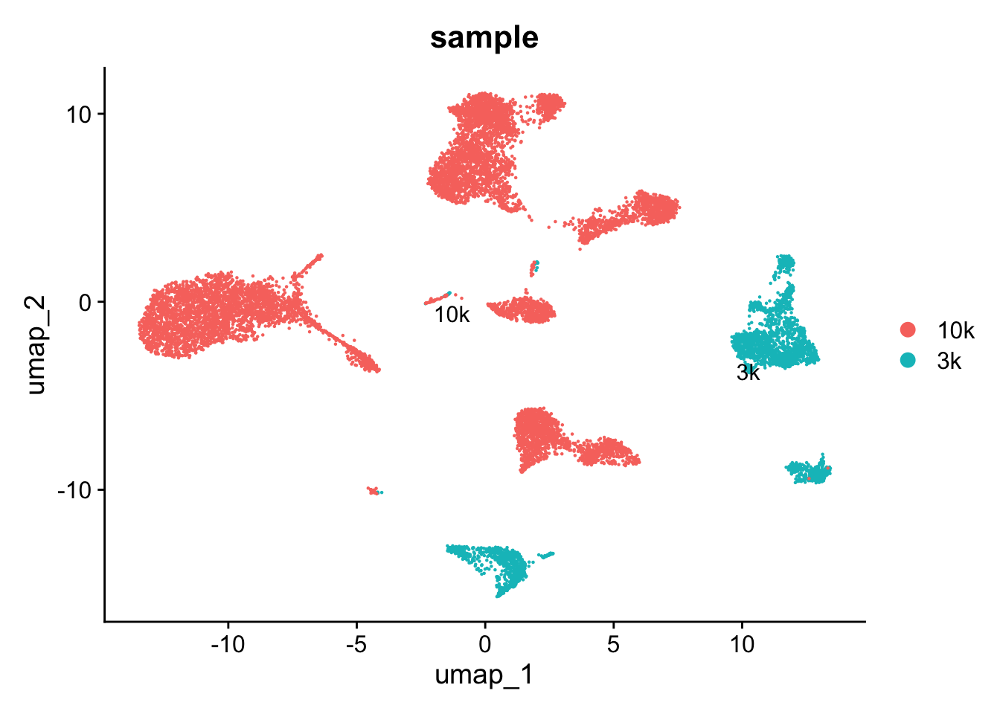

Last updated: 2025-04-22
Checks: 6 1
Knit directory:
single-cell-RNAseq-PCA-CCA-cell-annotation/
This reproducible R Markdown analysis was created with workflowr (version 1.7.1). The Checks tab describes the reproducibility checks that were applied when the results were created. The Past versions tab lists the development history.
The R Markdown file has unstaged changes. To know which version of
the R Markdown file created these results, you’ll want to first commit
it to the Git repo. If you’re still working on the analysis, you can
ignore this warning. When you’re finished, you can run
wflow_publish to commit the R Markdown file and build the
HTML.
Great job! The global environment was empty. Objects defined in the global environment can affect the analysis in your R Markdown file in unknown ways. For reproduciblity it’s best to always run the code in an empty environment.
The command set.seed(20250421) was run prior to running
the code in the R Markdown file. Setting a seed ensures that any results
that rely on randomness, e.g. subsampling or permutations, are
reproducible.
Great job! Recording the operating system, R version, and package versions is critical for reproducibility.
Nice! There were no cached chunks for this analysis, so you can be confident that you successfully produced the results during this run.
Great job! Using relative paths to the files within your workflowr project makes it easier to run your code on other machines.
Great! You are using Git for version control. Tracking code development and connecting the code version to the results is critical for reproducibility.
The results in this page were generated with repository version 7265c06. See the Past versions tab to see a history of the changes made to the R Markdown and HTML files.
Note that you need to be careful to ensure that all relevant files for
the analysis have been committed to Git prior to generating the results
(you can use wflow_publish or
wflow_git_commit). workflowr only checks the R Markdown
file, but you know if there are other scripts or data files that it
depends on. Below is the status of the Git repository when the results
were generated:
Ignored files:
Ignored: .Rhistory
Ignored: .Rproj.user/
Unstaged changes:
Modified: analysis/how-seurat-cca-label-transfer.Rmd
Modified: analysis/how-seurat-pca-label-transfer.Rmd
Note that any generated files, e.g. HTML, png, CSS, etc., are not included in this status report because it is ok for generated content to have uncommitted changes.
These are the previous versions of the repository in which changes were
made to the R Markdown
(analysis/how-seurat-cca-label-transfer.Rmd) and HTML
(docs/how-seurat-cca-label-transfer.html) files. If you’ve
configured a remote Git repository (see ?wflow_git_remote),
click on the hyperlinks in the table below to view the files as they
were in that past version.
| File | Version | Author | Date | Message |
|---|---|---|---|---|
| Rmd | 7265c06 | crazyhottommy | 2025-04-22 | first commit |
| html | 7265c06 | crazyhottommy | 2025-04-22 | first commit |
To not miss a post like this, sign up for my newsletter to learn computational biology and bioinformatics.
Following my last blog post on PCA
projection and cell label transfer, we are going to talk about
CCA.
In Seurat(Tim Stuart et al 2019), the other way is to
use Canonical Correlation Analysis (CCA) for data integration and label
transferand we will explore it today!

In single-cell RNA-seq data integration using
Canonical Correlation Analysis (CCA), we typically align
two matrices representing different datasets, where both datasets have
the same set of genes but different numbers of cells. CCA is used to
identify correlated structures across the two datasets and align them in
a common space.
Let’s denote the two datasets as:
\(X\): a matrix with dimensions \(p \times n1\) (where \(p\) is the number of genes and \(n\) is the number of cells in dataset 1, e.g., PBMC 3k)
Y: a matrix with dimensions \(p \times n2\) (where \(p\) is the number of genes and \(n\) is the number of cells in dataset 2, e.g., PBMC 10k)
In this case, the number of genes (rows) is the same in both matrices, but the number of cells (columns) is different.
The goal of CCA here is to find linear combinations of
the genes in both datasets that produce correlated cell embeddings in a
lower-dimensional space. Essentially, we aim to align the two datasets
by identifying the correlated patterns in gene expression that are
shared between the two sets of cells.
Given the two datasets \(X\) and \(Y\), CCA finds the linear combinations of the gene expression profiles that are maximally correlated. This means that for each cell in \(X\) and each cell in \(Y\) we find directions in the gene expression space that maximize the correlation between the two datasets.
Input Data:
a matrix \(X \in \mathbb{R}^{p \times n_1}\) is the matrix of gene expression from the first dataset (3k cells), and \(Y \in \mathbb{R}^{p \times n_2}\) is the matrix of gene expression from the second dataset (10k cells).
Canonical Variates: We aim to find vectors \(a \in \mathbb{R}^p\) and \(b \in \mathbb{R}^p\) such that:
\[ u = X^T a \quad (\text{canonical variate for cells in } X) \]
\[ v = Y^T b \quad (\text{canonical variate for cells in } Y) \]
Where \(u\) and \(v\) are the canonical variates, and the goal is to maximize the correlation:
\[ \text{corr}(u, v) = \frac{\text{cov}(u, v)}{\sqrt{\text{var}(u)} \cdot \sqrt{\text{var}(v)}} \]
Covariance Matrices: \[ \Sigma_{XX} = \frac{1}{n_1 - 1} XX^T \quad \text{(covariance matrix of dataset } X) \]
\[ \Sigma_{YY} = \frac{1}{n_2 - 1} YY^T \quad \text{(covariance matrix of dataset } Y) \]
\[ \Sigma_{XY} = \frac{1}{\min(n_1, n_2) - 1} X^TY \quad \text{(cross-covariance matrix between } X \text{ and } Y) \]
Generalized Eigenvalue Problem (GEP):
To find the canonical weights \(a\) and \(b\), we solve the generalized eigenvalue problem:
\[ \Sigma_{XX}^{-1} \Sigma_{XY} \Sigma_{YY}^{-1} \Sigma_{YX} a = \lambda a \]
Similarly for \(b\):
\[ \Sigma_{YY}^{-1} \Sigma_{YX} \Sigma_{XX}^{-1} \Sigma_{XY} b = \lambda b \]
The eigenvalue \(\lambda\) corresponds to the canonical correlation. \(a\) is the canonical weight vector for dataset \(X\) \(b\) is the canonical weight vector for dataset \(Y\)
Solving the eigenvalue problem involves finding the eigenvalues and
eigenvectors that maximize the correlation between the datasets, but it
effectively solves the same problem as the SVD for the
covariance matrix \(\Sigma XY\). One
can demonstrate that mathematically using matrix calculation. I am not a
math person, I will leave it to you to do the proof :). Again, I really
wish I learned linear algebra better.
Note watch this for eigenvalues and eigenvectors from 3blue1brown.
Note read this blog post https://xinmingtu.cn/blog/2022/CCA_dual_PCA/ by Xinming Tu (with nice visuals!) to understand the relationship between CCA and PCA in a more mathematical way.
Perform SVD on the Cross-Covariance Matrix:
The SVD of the cross-covariance matrix \(\Sigma_{XY}\) can be expressed as:
\[ \Sigma_{XY} = U D V^T \]
where:
- \(U\) is a matrix of left singular
vectors (canonical directions for dataset \(X\),
- \(V\) is a matrix of right singular
vectors (canonical directions for dataset \(Y\),
- \(D\) is a diagonal matrix containing
singular values, which represent the strength of correlations.
The matrix \(U\) contains the left singular vectors of \(\Sigma_{XY}\), which correspond to the canonical directions for dataset \(X\). These directions are the axes along which the data in \(X\) is maximally correlated with the data in \(Y\), as measured by the singular values in \(D\). Thus, \(U\) represents the canonical variates (directions) for \(X\), just as \(V\) represents the canonical variates for \(Y\).
library(Seurat)
library(Matrix)
library(irlba) # For PCA
library(dplyr)
# devtools::install_github('satijalab/seurat-data')
library(SeuratData)
#AvailableData()
#InstallData("pbmc3k")The pbmc3k data and pbmc10k data have different number of gene names, let’s subset to the common genes.
# download 10k dataset here curl -Lo pbmc_10k_v3.rds https://www.dropbox.com/s/3f3p5nxrn5b3y4y/pbmc_10k_v3.rds?dl=1
pbmc3k<-UpdateSeuratObject(pbmc3k)
pbmc10k<- readRDS("~/blog_data/pbmc_10k_v3.rds")
pbmc10k<-UpdateSeuratObject(pbmc10k)
pbmc3k_genes <- rownames(pbmc3k)
pbmc10k_genes <- rownames(pbmc10k)
# Find common genes
common_genes <- intersect(pbmc3k_genes, pbmc10k_genes)
# reorder the genes to the same order
pbmc3k <- subset(pbmc3k, features = common_genes)
pbmc10k <- subset(pbmc10k, features = common_genes)How the pbmc10k data look like:
# routine processing for 3k dataset
pbmc3k<- pbmc3k %>%
NormalizeData(normalization.method = "LogNormalize", scale.factor = 10000) %>%
FindVariableFeatures(selection.method = "vst", nfeatures = 5000) %>%
ScaleData() %>%
RunPCA(verbose = FALSE) %>%
FindNeighbors(dims = 1:10, verbose = FALSE) %>%
FindClusters(resolution = 0.5, verbose = FALSE) %>%
RunUMAP(dims = 1:10, verbose = FALSE)
DimPlot(pbmc10k, label = TRUE, repel = TRUE) + NoLegend()
| Version | Author | Date |
|---|---|---|
| 7265c06 | crazyhottommy | 2025-04-22 |
The pbmc3k dataset comes with annotations (the seurat_annotations column). In this experiment, we will pretend we do not have it and use the 10k pbmc data to transfer the labels. Also the pbmc10k cell labels are a little more granular.
pbmc10k <- NormalizeData(pbmc10k)
pbmc10k <- FindVariableFeatures(pbmc10k, selection.method = "vst", nfeatures = 5000)
pbmc10k <- ScaleData(pbmc10k)
# Find common variable features, Seurat has a more complex function
# we will take the intersection
#variable_genes <- SelectIntegrationFeatures(list(pbmc3k, pbmc10k), nfeatures = 3000)
variable_genes <- intersect(VariableFeatures(pbmc3k), VariableFeatures(pbmc10k))Note we need to scale them by genes across the cells first.
# Step 1: Center the datasets
centered_pbmc3k <- t(scale(t(pbmc3k@assays$RNA@data[variable_genes,]), center =TRUE, scale =TRUE))
centered_pbmc10k <- t(scale(t(pbmc10k@assays$RNA@data[variable_genes,]), center= TRUE, scale =TRUE))
dim(centered_pbmc3k)#> [1] 2376 2700dim(centered_pbmc10k)#> [1] 2376 9432SVD directly computes the singular values (canonical
correlations) and singular vectors (canonical variates) by decomposing
\(\Sigma XY\)
The singular value decomposition (SVD) can be mathematically related to solving the generalized eigenvalue problem.
Sigma_XY<- (1 / (min(ncol(centered_pbmc3k), ncol(centered_pbmc10k)) - 1)) * t(centered_pbmc3k) %*% centered_pbmc10k
dim(Sigma_XY)#> [1] 2700 9432# Perform SVD
k <- 20 # Number of CCA dimensions
cca_svd <- irlba::irlba(Sigma_XY, nu=k, nv=k)
# Get canonical variates and correlations
canonical_variates_3k <- cca_svd$u # PBMC3k canonical variates
canonical_variates_10k <- cca_svd$v # PBMC10k canonical variates
# cca_svd$d contains the singular values
canonical_cors <- cca_svd$d # Canonical correlations
range(canonical_cors)#> [1] 4.70585 165.14183# normalize it so the first CCA dimension has a correlation close to 1
canonical_cors<- cca_svd$d / sum(cca_svd$d)
barplot(canonical_cors,
main="Canonical Correlations",
xlab="Canonical Dimension",
ylab="Correlation",
col="lightblue")
| Version | Author | Date |
|---|---|---|
| 7265c06 | crazyhottommy | 2025-04-22 |
The sum of the first few CCA dimension should have a correlation close to 1.
From the Seurat V3 paper: https://pmc.ncbi.nlm.nih.gov/articles/PMC6687398/
While MNNs have previously been identified using L2-normalized gene expression, significant differences across batches can obscure the accurate identification of MNNs, particularly when the batch effect is on a similar scale to the biological differences between cell states. To overcome this, we first jointly reduce the dimensionality of both datasets using diagonalized canonical correlation analysis (CCA), then apply L2-normalization to the canonical correlation vectors (Figure 1A,B). We next search for MNNs in this shared low-dimensional representation
Purpose of L2 Normalization: After computing the canonical variates (the linear combinations of the original variables that maximize correlation), L2 normalization (also known as Euclidean normalization) is applied to these vectors. This process scales the vectors so that their lengths (norms) equal one.
Mathematical Formulation: For a vector \(v\) L2 normalization can be expressed as:
\(v_{\text{normalized}} = \frac{v}{\|v\|_2}\)
where \(\|v\|_2\) is the L2 norm (Euclidean norm) of the vector.
Benefits of L2 Normalization:
Stabilization: It helps to stabilize the comparison of canonical correlation vectors across datasets, making the downstream analysis more robust.
Interpretable Scale: Normalized vectors provide a more interpretable scale for distances and similarities in the integrated dataset.
Apply the L2 normalization for each cell.
l2_normalize <- function(x) {
x / sqrt(rowSums(x^2))
}
# L2-normalize the canonical variates for PBMC 3k
canonical_variates_3k<- l2_normalize(canonical_variates_3k)
# L2-normalize the canonical variates for PBMC 10k
canonical_variates_10k <- l2_normalize(canonical_variates_10k)
# Check dimensions to make sure they remain the same
dim(canonical_variates_3k) # Should be 2700 by 20#> [1] 2700 20dim(canonical_variates_10k) # Should be 9432 by 20#> [1] 9432 20We will use RANN package to do it at a high level. We
used RcppAnnoy in the last post.
library(RANN)
# Step 1: Find Nearest Neighbors using RANN
k <- 30 # Number of neighbors to consider
nn_result_10k <- nn2(data = canonical_variates_10k, query = canonical_variates_3k, k = k)
nn_indices_10k <- nn_result_10k$nn.idx # Indices of nearest neighbors in pbmc10k
# Find the nearest neighbors in pbmc3k for pbmc10k cells
nn_result_3k <- nn2(data = canonical_variates_3k, query = canonical_variates_10k, k = k)
nn_indices_3k <- nn_result_3k$nn.idx # Indices of nearest neighbors in pbmc3k
# Step 2: Identify Mutual Nearest Neighbors
find_mnn <- function(nn_indices_10k, nn_indices_3k) {
mnn_list <- vector("list", length = nrow(canonical_variates_3k))
for (i in 1:nrow(canonical_variates_3k)) {
neighbors_10k <- nn_indices_10k[i, ] # Neighbors in pbmc10k
mutual_neighbors <- c()
for (neighbor in neighbors_10k) {
# Check if this neighbor sees the original cell as its nearest neighbor
if (i %in% nn_indices_3k[neighbor, ]) {
mutual_neighbors <- c(mutual_neighbors, neighbor)
}
}
mnn_list[[i]] <- mutual_neighbors
}
return(mnn_list)
}
# Find MNNs
mnn_indices <- find_mnn(nn_indices_10k, nn_indices_3k)Label transfer for cells that have MNNs.
# Step 3: Label Transfer with MNN
# Assume we have labels for the PBMC10k dataset
pbmc10k_labels <- as.character(pbmc10k$celltype)
# Initialize transferred labels and scores
transferred_labels <- character(length = nrow(canonical_variates_3k))
transfer_scores <- numeric(length = nrow(canonical_variates_3k))
# Transfer labels with error handling
for (i in seq_along(mnn_indices)) {
if (length(mnn_indices[[i]]) > 0) {
# Get labels for the MNNs
labels <- pbmc10k_labels[mnn_indices[[i]]]
# Remove NAs from labels
labels <- labels[!is.na(labels)]
# Check if we have any valid labels left
if (length(labels) > 0) {
# Assign the most common label among the MNNs
transferred_labels[i] <- names(sort(table(labels), decreasing = TRUE))[1]
# Calculate transfer score as the proportion of matching labels
transfer_scores[i] <- max(table(labels)) / length(labels)
} else {
# Assign NA or a default value if no valid labels
transferred_labels[i] <- NA_character_ # Keep it as NA of character type
transfer_scores[i] <- 0
}
} else {
# For cells without MNN, assign NA or a default label (e.g., "unknown")
transferred_labels[i] <- NA_character_
transfer_scores[i] <- 0
}
}You can assign a default label or propagate labels based on other criteria. For example, using a knn approach or global label distribution. Optionally, you could implement a fallback strategy like the following:
for (i in seq_along(transferred_labels)) {
if (is.na(transferred_labels[i])) {
# Look for the nearest neighbor labels in pbmc10k
nearest_label_index <- nn_indices_10k[i, 1] # Get the first neighbor
transferred_labels[i] <- pbmc10k_labels[nearest_label_index] # Assign its label
}
}
# transferred_labels now contains labels transferred from pbmc10k to pbmc3k
# transfer_scores indicates the confidence of the label transfer for each cell
pbmc3k$transferred_labels<- transferred_labelsthe default is pcaprojection as what we did in my last
blog post.
# Step 1: Find transfer anchors
anchors <- FindTransferAnchors(
reference = pbmc10k, # The reference dataset
query = pbmc3k, # The query dataset
dims = 1:100, # The dimensions to use for anchor finding
#reduction = "cca" #
)
# Step 2: Transfer labels
predictions <- TransferData(
anchors = anchors, # The anchors identified in the previous step
refdata = pbmc10k$celltype, # Assuming 'label' is the metadata containing the true labels in seurat_10k
dims = 1:30 # Dimensions to use for transferring
)
# Step 3: Add predictions to the query dataset
pbmc3k <- AddMetaData(pbmc3k, metadata = predictions)
# predicted.id is from Seurat's wrapper function, predicted is from our naive implementation
table(pbmc3k$transferred_labels, pbmc3k$predicted.id)#>
#> B cell progenitor CD14+ Monocytes CD16+ Monocytes
#> B cell progenitor 84 0 0
#> CD14+ Monocytes 0 480 15
#> CD16+ Monocytes 0 5 131
#> CD4 Memory 0 0 0
#> CD4 Naive 0 0 0
#> CD8 effector 0 0 0
#> CD8 Naive 0 0 0
#> Dendritic cell 0 3 1
#> Double negative T cell 0 0 0
#> NK cell 2 0 0
#> pDC 0 2 0
#> Platelets 0 3 0
#> pre-B cell 15 0 0
#>
#> CD4 Memory CD4 Naive CD8 effector CD8 Naive
#> B cell progenitor 3 6 0 1
#> CD14+ Monocytes 22 21 0 0
#> CD16+ Monocytes 0 0 0 0
#> CD4 Memory 445 173 4 21
#> CD4 Naive 4 336 0 17
#> CD8 effector 21 6 161 6
#> CD8 Naive 0 34 0 77
#> Dendritic cell 0 1 0 1
#> Double negative T cell 25 12 3 2
#> NK cell 1 1 14 0
#> pDC 2 1 0 0
#> Platelets 0 0 2 0
#> pre-B cell 0 0 0 0
#>
#> Dendritic cell Double negative T cell NK cell pDC
#> B cell progenitor 0 0 0 0
#> CD14+ Monocytes 4 0 1 0
#> CD16+ Monocytes 0 0 0 0
#> CD4 Memory 0 1 2 0
#> CD4 Naive 0 0 0 0
#> CD8 effector 0 2 0 0
#> CD8 Naive 0 0 0 0
#> Dendritic cell 27 0 0 0
#> Double negative T cell 0 89 0 0
#> NK cell 0 1 150 0
#> pDC 0 0 0 4
#> Platelets 0 0 0 0
#> pre-B cell 0 0 0 0
#>
#> Platelets pre-B cell
#> B cell progenitor 0 11
#> CD14+ Monocytes 1 0
#> CD16+ Monocytes 0 0
#> CD4 Memory 0 0
#> CD4 Naive 0 0
#> CD8 effector 0 0
#> CD8 Naive 0 0
#> Dendritic cell 0 0
#> Double negative T cell 0 0
#> NK cell 0 1
#> pDC 0 0
#> Platelets 12 0
#> pre-B cell 0 230visualize in a heatmap
library(ComplexHeatmap)
table(pbmc3k$transferred_labels, pbmc3k$predicted.id) %>%
as.matrix() %>%
scale() %>%
Heatmap(cluster_rows = FALSE, cluster_columns= FALSE, name= "scaled\ncell number")
| Version | Author | Date |
|---|---|---|
| 7265c06 | crazyhottommy | 2025-04-22 |
With the CCA embeddings, you can do clustering (k-means, hierarchical clustering etc) and UMAP by concatenating the cannoical variates from two datasets together.
# Load required libraries for clustering and UMAP
library(uwot) # For UMAP
library(cluster) # For clustering algorithms (like k-means)
# Combine canonical variates from both datasets
combined_variates <- rbind(canonical_variates_3k, canonical_variates_10k)
combined_variates<- scale(combined_variates)
# Step 1: Clustering (using k-means as an example)
# Set the number of clusters (k)
k <- 13 # Choose the number of clusters based on your data ( I am cheating as I know 13 celltypes in the dataset)
set.seed(123)
kmeans_result <- kmeans(combined_variates, centers = k)
# Extract cluster labels
cluster_labels <- kmeans_result$cluster
# Step 2: UMAP Calculation
# Compute UMAP on the canonical variates
umap_results <- umap(combined_variates)
# UMAP Results
umap_data <- as.data.frame(umap_results)
# Add cluster labels and data source to UMAP results for visualization
umap_data$Cluster <- factor(cluster_labels)
umap_data$dataset<- c(rep("3k", nrow(canonical_variates_3k)),
rep("10k", nrow(canonical_variates_10k)))
umap_data$celltype<- c(as.character(pbmc3k$transferred_labels),
as.character(pbmc10k$celltype))
table(umap_data$Cluster, umap_data$celltype) %>%
as.matrix() %>%
scale() %>%
Heatmap(cluster_rows = FALSE, cluster_columns= FALSE, name= "scaled\ncell number")
| Version | Author | Date |
|---|---|---|
| 7265c06 | crazyhottommy | 2025-04-22 |
K-means works reasonably well. It mixes CD4 naive and CD8 naive together; pDC and Dendritic cells together. It split CD14+ monocytes into two different cluster 6 and 11. One can do many times of K-means and use the consensus as the clusters. e.g., SC3: consensus clustering of single-cell RNA-seq data.
Plot UMAP
library(ggplot2)
ggplot(umap_data, aes(x = V1, y = V2, color = dataset)) +
geom_point(size = 0.4) +
labs(title = "UMAP Projection of CCA Canonical Variates",
x = "UMAP 1",
y = "UMAP 2") +
theme_minimal() +
scale_color_discrete(name = "dataset") +
facet_wrap(~dataset)
| Version | Author | Date |
|---|---|---|
| 7265c06 | crazyhottommy | 2025-04-22 |
We see those two datasets are aligned super well!
ggplot(umap_data, aes(x = V1, y = V2, color = dataset)) +
geom_point(size = 0.4) +
labs(title = "UMAP Projection of CCA Canonical Variates",
x = "UMAP 1",
y = "UMAP 2") +
theme_minimal() +
scale_color_discrete(name = "dataset") 
| Version | Author | Date |
|---|---|---|
| 7265c06 | crazyhottommy | 2025-04-22 |
Let’s color the cells with celltype:
# use https://oompa.r-forge.r-project.org/packages/Polychrome/polychrome.html for colors
library(Polychrome)
# length(unique(umap_data$celltype))
# total 13 distinct cell types
# remove the first white color
colors_to_use<- kelly.colors(n=14)[-1] %>% unname()
ggplot(umap_data, aes(x = V1, y = V2, color = celltype)) +
geom_point(size = 0.4) +
labs(title = "UMAP Projection of CCA Canonical Variates",
x = "UMAP 1",
y = "UMAP 2") +
theme_minimal() +
scale_color_manual(values = colors_to_use) +
guides(colour = guide_legend(override.aes = list(size=2))) # increase the dot size in the legend
| Version | Author | Date |
|---|---|---|
| 7265c06 | crazyhottommy | 2025-04-22 |
What if we do not use the CCA covariates for clustering? We can just concatenate two seurat object together and go through the routine process:
# add a metadata column so you know which dataset the cells are from
pbmc3k$sample<- "3k"
pbmc10k$sample<- "10k"
# combine two seurat objects together
pbmc<- merge(pbmc3k, pbmc10k)
pbmc<- pbmc %>%
NormalizeData(normalization.method = "LogNormalize", scale.factor = 10000) %>%
FindVariableFeatures(selection.method = "vst", nfeatures = 5000) %>%
ScaleData() %>%
RunPCA(verbose = FALSE) %>%
FindNeighbors(dims = 1:30, verbose = FALSE) %>%
FindClusters(resolution = 0.5, verbose = FALSE) %>%
RunUMAP(dims = 1:30, verbose = FALSE)
DimPlot(pbmc, label = TRUE, repel = TRUE, group.by= "sample") 
| Version | Author | Date |
|---|---|---|
| 7265c06 | crazyhottommy | 2025-04-22 |
Without using CCA, you see the cells are separated by
samples. The idea of data integration is to make the cells of the same
cell type group together even they are from different datasets while
cells of different cell types still separate from each other.
Aligning Cell Embeddings: CCA produces canonical variates \(u\) and \(v\), which are lower-dimensional embeddings of the cells from the two datasets. These embeddings are aligned in such a way that the cells from both datasets are maximally correlated in this new space.
Identifying Shared Structure: By finding the common canonical directions, CCA captures the shared structure in gene expression between the two datasets, allowing cells with similar profiles across datasets to be aligned.
Unlike PCA, which focuses on capturing variance within a
single dataset, CCA focuses on capturing
correlation between two datasets. Both involve matrix decomposition, but
while PCA decomposes a single covariance matrix,
CCA involves solving for relationships between the
covariance matrices of two datasets.
To summarize:
Happy Learning!
Tommy aka. Crazyhottommy
sessionInfo()#> R version 4.4.1 (2024-06-14)
#> Platform: aarch64-apple-darwin20
#> Running under: macOS Sonoma 14.1
#>
#> Matrix products: default
#> BLAS: /Library/Frameworks/R.framework/Versions/4.4-arm64/Resources/lib/libRblas.0.dylib
#> LAPACK: /Library/Frameworks/R.framework/Versions/4.4-arm64/Resources/lib/libRlapack.dylib; LAPACK version 3.12.0
#>
#> locale:
#> [1] en_US.UTF-8/en_US.UTF-8/en_US.UTF-8/C/en_US.UTF-8/en_US.UTF-8
#>
#> time zone: America/New_York
#> tzcode source: internal
#>
#> attached base packages:
#> [1] grid stats graphics grDevices utils datasets methods
#> [8] base
#>
#> other attached packages:
#> [1] Polychrome_1.5.4 ggplot2_3.5.1 cluster_2.1.6
#> [4] uwot_0.2.2 ComplexHeatmap_2.20.0 RANN_2.6.1
#> [7] pbmc3k.SeuratData_3.1.4 SeuratData_0.2.2.9001 dplyr_1.1.4
#> [10] irlba_2.3.5.1 Matrix_1.7-0 Seurat_5.1.0
#> [13] SeuratObject_5.0.2 sp_2.1-4 workflowr_1.7.1
#>
#> loaded via a namespace (and not attached):
#> [1] RColorBrewer_1.1-3 shape_1.4.6.1 rstudioapi_0.16.0
#> [4] jsonlite_1.8.8 magrittr_2.0.3 magick_2.8.5
#> [7] spatstat.utils_3.1-0 farver_2.1.2 rmarkdown_2.27
#> [10] GlobalOptions_0.1.2 fs_1.6.4 vctrs_0.6.5
#> [13] ROCR_1.0-11 Cairo_1.6-2 spatstat.explore_3.3-2
#> [16] htmltools_0.5.8.1 sass_0.4.9 sctransform_0.4.1
#> [19] parallelly_1.38.0 KernSmooth_2.23-24 bslib_0.8.0
#> [22] htmlwidgets_1.6.4 ica_1.0-3 plyr_1.8.9
#> [25] plotly_4.10.4 zoo_1.8-12 cachem_1.1.0
#> [28] whisker_0.4.1 igraph_2.0.3 iterators_1.0.14
#> [31] mime_0.12 lifecycle_1.0.4 pkgconfig_2.0.3
#> [34] R6_2.5.1 fastmap_1.2.0 clue_0.3-65
#> [37] fitdistrplus_1.2-1 future_1.34.0 shiny_1.9.0
#> [40] digest_0.6.36 colorspace_2.1-1 S4Vectors_0.42.1
#> [43] patchwork_1.2.0 ps_1.7.7 rprojroot_2.0.4
#> [46] tensor_1.5 RSpectra_0.16-2 labeling_0.4.3
#> [49] progressr_0.14.0 fansi_1.0.6 spatstat.sparse_3.1-0
#> [52] httr_1.4.7 polyclip_1.10-7 abind_1.4-5
#> [55] compiler_4.4.1 doParallel_1.0.17 withr_3.0.0
#> [58] fastDummies_1.7.4 highr_0.11 MASS_7.3-60.2
#> [61] rappdirs_0.3.3 scatterplot3d_0.3-44 rjson_0.2.22
#> [64] tools_4.4.1 lmtest_0.9-40 httpuv_1.6.15
#> [67] future.apply_1.11.2 goftest_1.2-3 glue_1.7.0
#> [70] callr_3.7.6 nlme_3.1-164 promises_1.3.0
#> [73] Rtsne_0.17 getPass_0.2-4 reshape2_1.4.4
#> [76] generics_0.1.3 gtable_0.3.5 spatstat.data_3.1-2
#> [79] tidyr_1.3.1 data.table_1.15.4 utf8_1.2.4
#> [82] BiocGenerics_0.50.0 spatstat.geom_3.3-2 RcppAnnoy_0.0.22
#> [85] foreach_1.5.2 ggrepel_0.9.5 pillar_1.9.0
#> [88] stringr_1.5.1 spam_2.10-0 RcppHNSW_0.6.0
#> [91] later_1.3.2 circlize_0.4.16 splines_4.4.1
#> [94] lattice_0.22-6 survival_3.6-4 deldir_2.0-4
#> [97] tidyselect_1.2.1 miniUI_0.1.1.1 pbapply_1.7-2
#> [100] knitr_1.48 git2r_0.35.0 gridExtra_2.3
#> [103] IRanges_2.38.1 scattermore_1.2 stats4_4.4.1
#> [106] xfun_0.46 matrixStats_1.3.0 stringi_1.8.4
#> [109] lazyeval_0.2.2 yaml_2.3.10 evaluate_0.24.0
#> [112] codetools_0.2-20 tibble_3.2.1 cli_3.6.3
#> [115] xtable_1.8-4 reticulate_1.38.0 munsell_0.5.1
#> [118] processx_3.8.4 jquerylib_0.1.4 Rcpp_1.0.13
#> [121] globals_0.16.3 spatstat.random_3.3-1 png_0.1-8
#> [124] spatstat.univar_3.0-0 parallel_4.4.1 dotCall64_1.1-1
#> [127] listenv_0.9.1 viridisLite_0.4.2 scales_1.3.0
#> [130] ggridges_0.5.6 crayon_1.5.3 leiden_0.4.3.1
#> [133] purrr_1.0.2 GetoptLong_1.0.5 rlang_1.1.4
#> [136] cowplot_1.1.3